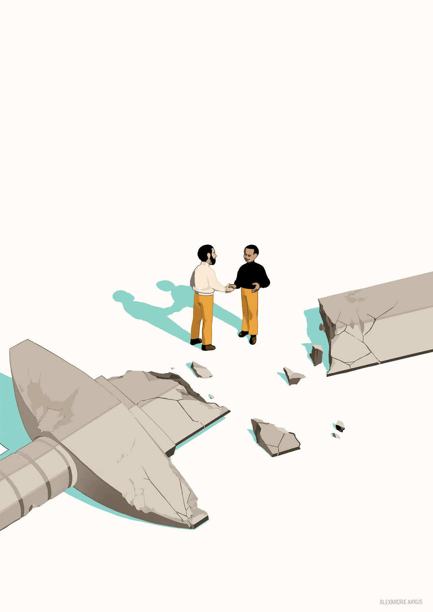

Et si on refusait que la violence domine notre monde ?
La violence des hommes sur les femmes, des riches sur les pauvres, des gens d’armes sur les gens désarmés, des humains sur les autres espèces vivantes, de notre modèle de civilisation sur le reste de la nature… Et si, au-delà du fracas des heurts, de son caractère spectaculaire et insoutenable, la violence nous avait perverti·es beaucoup plus profondément ? Si c’étaient nos esprits, et notre culture même, qui étaient déjà dominés par la logique de la violence ?
Et si, alors, nous nous réapproprions des valeurs jusqu’ici largement associées à la violence : si la violence n’était plus confondue avec la force, et avec le courage ? Si la violence n’était plus honorable, honorée, admirée, et justifiée ? Quel autre type de société cela pourrait-il créer ?
Il y a une logique fondamentale, résumée dans l’adage selon lequel « la fin justifie les moyens », qui permet de justifier toutes les violences. Il suffit qu’une cause soit considérée comme juste pour que les violences commises en son nom soient considérées comme justifiables, et pour qu’elles soient donc justifiées, et décrétées légitimes. Au-delà de ce qui différencie les multiples idéologies qui prétendent chacune que leur cause est juste, il y a ainsi une idéologie sous-jacente, première, commune à la plupart de toutes celles-là : l’idéologie qui prétend que la violence peut être juste. C’est la justification de la violence qui fonde la culture de violence, qui exerce sa domination hégémonique dans le monde entier.
Et si on refusait non pas telle ou telle violence, telle ou telle domination, telle ou telle injustice, mais toutes les violences, toutes les dominations et toutes les injustices ? Ou plutôt, si ce qu’on refusait désormais, c’était la logique même de la violence et de la domination, qui sont l’antithèse de la justice ? Un refus radical de la violence. Un « non » opposé à la logique meurtrière de la violence. C’est le « non » positif et émancipateur de la non-violence.
C’est l’idée centrale que ce n’est pas la fin qui justifie les moyens, mais que la fin est dans les moyens. C’est l’idée cardinale de la cohérence entre la fin et les moyens. C’est l’idée fondamentale d’une culture de non-violence.
Délégitimer la violence pourrait ainsi être le point de départ d’un changement de paradigme.
Non pas croire qu’il n’y aura plus jamais de conflit, car il y en aura. Et même, il faut apprendre à poser des conflits, qui resteront toujours un moyen nécessaire pour s’affirmer dans des situations où il faut faire cesser l’injustice et la domination. Mais savoir à la fois poser un conflit, et le résoudre sans qu’il dégénère en violence et en négation de l’autre.
Non pas croire que nous pourrons toujours empêcher toute violence, et que les souffrances ne seront plus de ce monde, mais œuvrer à les limiter au maximum. Être animé·es par la volonté de ne pas nuire.
Non pas croire que la violence sera toujours évitable, car elle sera parfois nécessaire, mais ne plus confondre nécessité et légitimité. Et ainsi sortir de l’idéologie de la justification de la violence qui, telle une prophétie auto-réalisatrice, rend les violences de demain imaginables, justifiables d’avance, et finalement inévitables.
Et si l’engrenage des violences n’était pas une fatalité ? Et si la véritable force était de trouver le courage de rompre le cercle vicieux de la violence qui enserre et oppresse notre monde ?
Et si on déviolentait le monde ?
Alexandre Akkus est étudiant en cinéma d’animation, dans le but de devenir artiste en développement visuel.
Alexandre-Akkus-1.jpeg
JonPalaisCreditBasileMesre-Barjon.jpeg
Jon Palais est un activiste écologiste, formateur à l’action non-violente, co-fondateur des mouvements Alternatiba et Action Non-Violente COP21.
(photo par Aurélia Esnault)